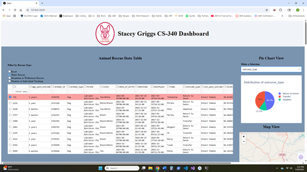
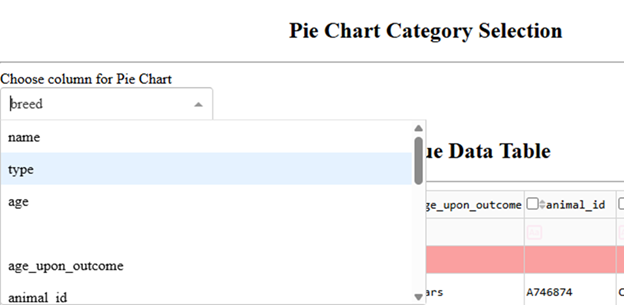
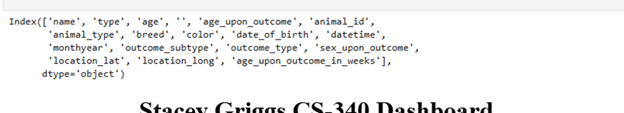
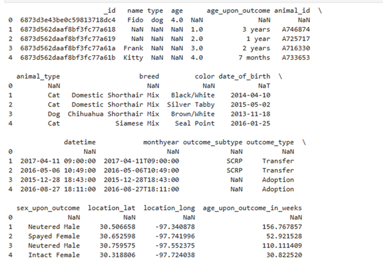
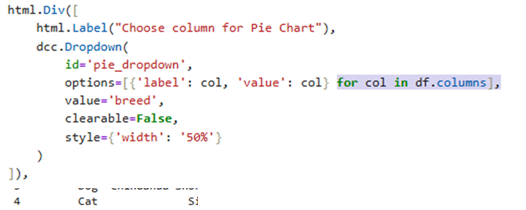
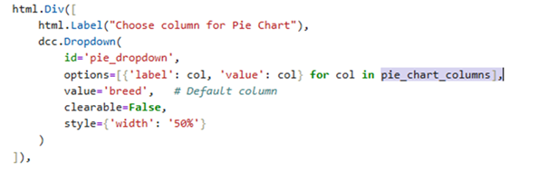
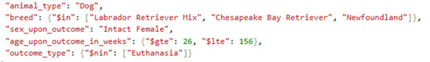
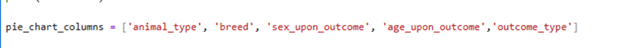

Artifact Description
This artifact is an interactive dashboard web application created using Dash and Python. It was initially developed in March of 2025 as part of the CS-340 course to display and analyze animal rescue data through tables, charts, and maps. The original version had basic layout and filtering options.
Justification for Inclusion in ePortfolio
This dashboard shows that I can build a complete data visualization tool from start to finish while managing both the design and functionality of a full-stack application. I created an interactive layout that includes a data table, pie chart, and map, with each component connected to live data and organized using a responsive Flexbox structure so they adjust when the screen is resized. The dashboard pulls live data and updates the charts and map automatically, which shows I can connect data to visual displays. I also customized the colors, layout, and spacing to make the app easy to use and visually appealing. There are still a few options that need improvement, I plan to address those in the next milestone when I work on the database.
Outcomes Achieved in This Milestone
- Better Layout with Flexbox:
- Improved Visual Design:
- Organized and Clear Code:
- More User-Friendly Data Table:
- Consistent Styling:
- Smarter Data Options:
Before, the dashboard stacked everything vertically with no clear order. I used Flexbox to split the main area into two side-by-side columns, making it easier to see and use on different screen sizes.
I added a round logo with a red border next to a bold title and used consistent colors and spacing to make the dashboard look cleaner and more professional.
I grouped related parts like filters and tables together and added comments. This makes the code easier to understand and update.
I added scrolling so the table does not get too big, and kept features like sorting and filtering to help users explore data easily.
I made sure dropdowns, buttons, and headings all have matching spacing and sizes, and fixed the sizes of charts and maps to keep everything neat and balanced.
Instead of showing every column in the pie chart dropdown, I picked a shorter list of options to help users easily find and sort the data they need. This makes the app easier to use and the code easier to manage.
Reflection on the Enhancement Process:
I improved this project by making layouts that adjust to different screen sizes, which helps users have a better experience. I also realized it is important to balance how things work with how they look, so the app is intuitive and easy for users to understand without struggling, while still looking good. Some challenges I had were figuring out the best way to arrange parts of the page, so everything is clear and fits well on different screens. I also spent time adjusting spacing and sizes to make the design look professional but not too busy. I also needed to debug some options to make sure everything worked correctly, and I have included a picture below to show the results. Testing and changing these details bit by bit helped me solve these problems. This work taught me how important it is to design software carefully, focus on the user’s needs, and write code that is easy to understand and update for future use.
Code Comparison
Original Code:
Updated Code:
Bonus:
- Debugging the code: I was getting unwanted search options for my pie chart dropdown menu 
-
Debug:
print(df.columns)shows all column titles  -
Debug:
print(df.head())shows the first 5 rows of the table to help me see a small sample of the DataFrame 
Changing this:
To this:
Only include these options:
In the pie chart:

GitHub Repo: CS340 - Grazioso Salvare Dashboard
GitHub Repo: strong>CS499 - Computer Science Capstone